- A. Install Java
- B. Install Git
- C. Install Windows Terminal (optional but recommended)
- D. Note on WSL2 (experimental)
A video walkthrough for this guide is available at http://sp21.datastructur.es/materials/lab/lab1setup/windows_setup_video.html.
A. Install Java
-
The first step is install the latest version of the Java OpenJDK. The easiest way to do this is to get a pre-built binary from the AdoptOpenJDK project, which you can download from https://adoptopenjdk.net/?variant=openjdk15&jvmVariant=hotspot. You’ll want to select the latest version combined with the HotSpot JVM. At the time of this writing the latest version is marked with “Open JDK 15 (Latest)”, but if some later version of Java has been released at the time you’re reading this, you’re welcome to download that instead.
-
Important: The installer will give you the following four options (note: the screenshots below show Java version 14 but yours should say 15):
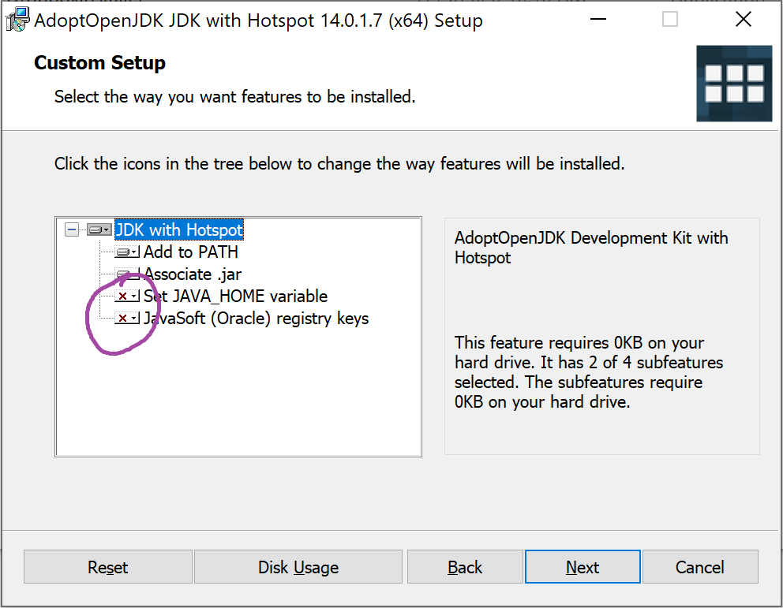
You should click the small red Xs and change it from “Entire feature will be unavailable” to “Will be installed on local hard drive”. When you’ve done this, it should look like the following:
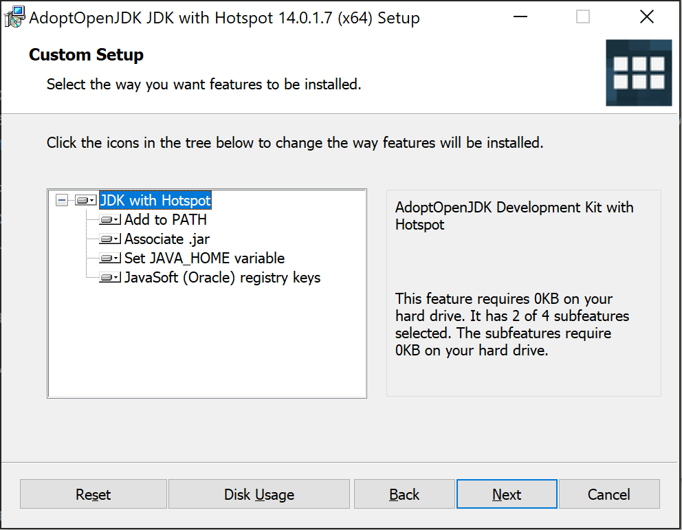
-
Click next until everything is installed.
B. Install Git
- Install git. Head to
http://git-scm.com/download/ and download the Git for Windows
installer.

-
Run the installer. Let git be installed in the default location (C:\Program Files\git). You’ll be faced with many options. We have recommendations for the first two, show below:
-
The first choice is selecting which components to install. The one option to pay attention to is
Windows Explorer integration. CheckingWindows Explorer integrationwill add new options to the context menu that appears when you right click a file. These two new options (Git Bash and Git GUI) might maybe one day be helpful to you. Personally, though, I’d turn it off. 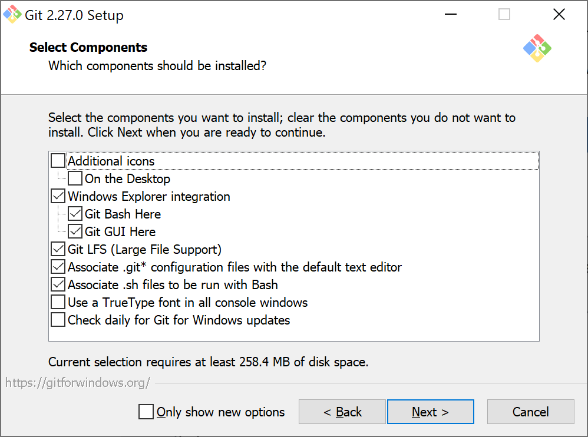 -
Next we’ll select a default Git Bash text editor. If you have a favorite text editor that’s on the list, select it. Otherwise you can leave it as vim for now. 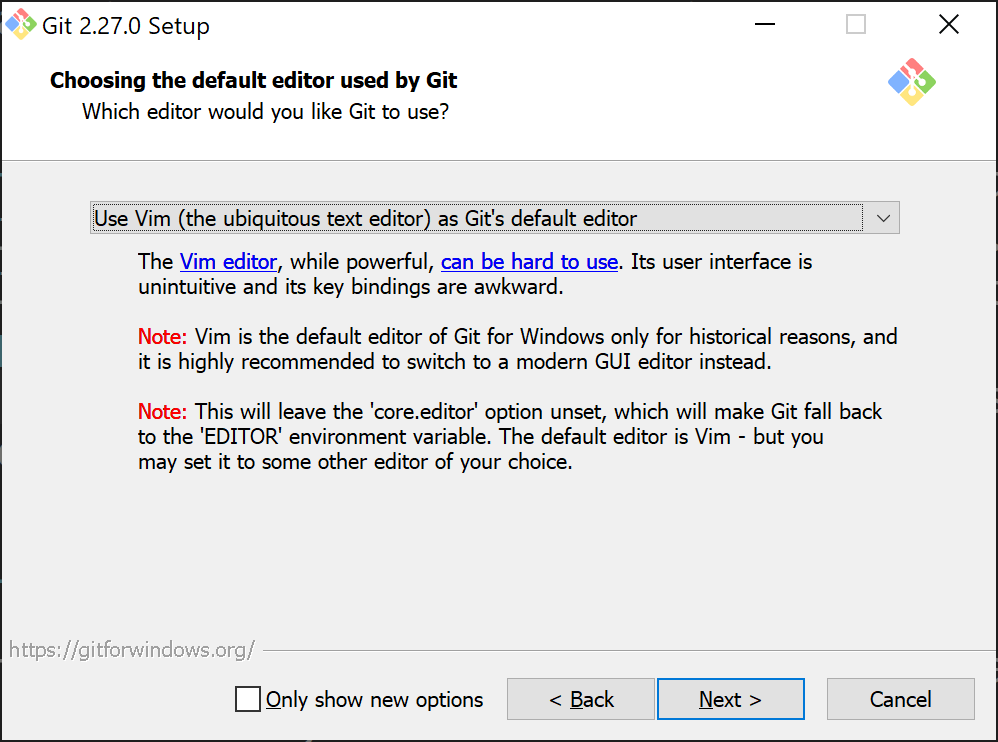
-
For all of the remaining choices, the defaults are fine. For the option that looks like this below, make sure you select the default “Git from the command line also from 3rd-party software” 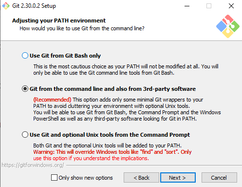
-
-
Open a git bash window (using the start menu, if you didn’t add a start menu link, you can go to C:\Program Files\Git\bin). The window that opens is a terminal window that allows you to interact with a bash shell. We’ll learn more about the bash shell in the lab1setup directions. To test that everything is working, try typing
javac --versionand press enter. If you see a message that says “javac version 15.0.1” (or other version number that is at least 15), then everything is working fine. You may have to restart your computer first before running this command. - Now type (or copy and paste)
git config --get core.editor. If you picked a text editor other than vim, you should see something like the image below: 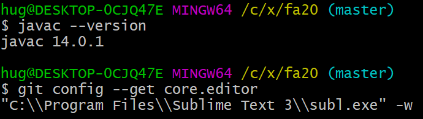
If instead nothing is printed, this means your default text editor is vim. If you’ve never used vim before, type git config --global core.editor "nano" and press enter. This will change the default text editor from vim to nano. nano is much much easier to use. Note: If you’re an experienced vim user, you can skip this step.
C. Install Windows Terminal (optional but recommended)
As an alternative to the git bash terminal, you can use the new Windows terminal app. I personally think it’s smoother, aesthetically nicer, and has some useful additional features like tabs.
It’s a bit annoying to set up, though, so if you don’t want to go to all the trouble below, the git bash terminal will work fine.
-
To install the Windows Terminal, I recommend using the Microsoft Store, which does not require a login or payment. Alternate installation instructions are at https://github.com/microsoft/terminal.
-
When you start up windows terminal, you’ll see something like the picture below: 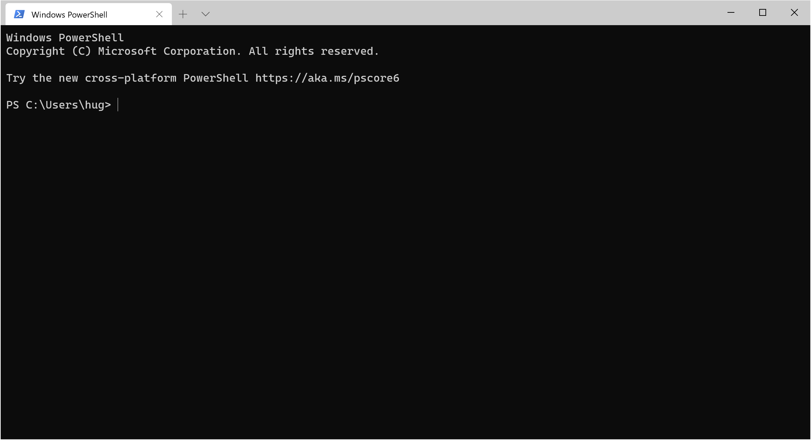
-
We don’t want to use “PowerShell”, which is based on Windows. Instead, we want to use “bash shell”, which is based on Linux. To set this up, press “ctrl-,” (control and comma) inside the Windows Terminal and you should see a file called “settings.json” open up in a text editor, as shown below: 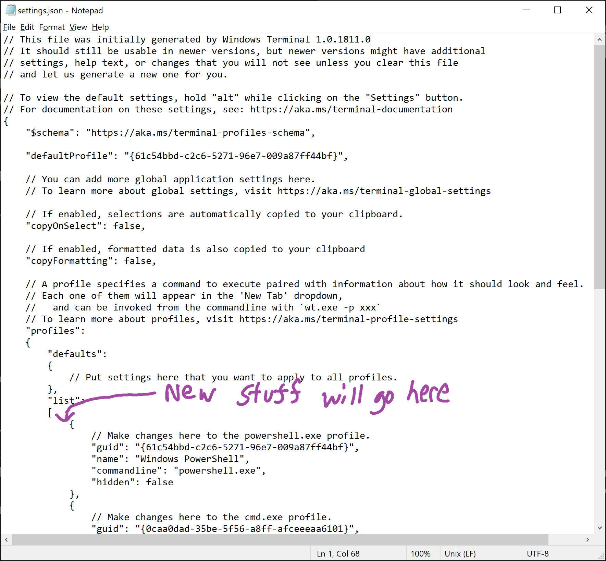
-
We’re going to add something to this file where the purple arrow appears in the picture above.
Specifically, you should copy and paste EXACTLY the text below,
{ "guid": "{00000000-0000-0000-ba54-000000000002}", "closeOnExit" : true, "commandline" : "\"%PROGRAMFILES%\\git\\usr\\bin\\bash.exe\" -i -l", "cursorColor" : "#FFFFFF", "cursorShape" : "bar", "fontFace" : "Consolas", "fontSize" : 10, "historySize" : 9001, "icon" : "ms-appx:///ProfileIcons/{0caa0dad-35be-5f56-a8ff-afceeeaa6101}.png", "name" : "Bash", "padding" : "0, 0, 0, 0", "snapOnInput" : true, "startingDirectory" : "%USERPROFILE%" }so that settings.json looks like the picture below:
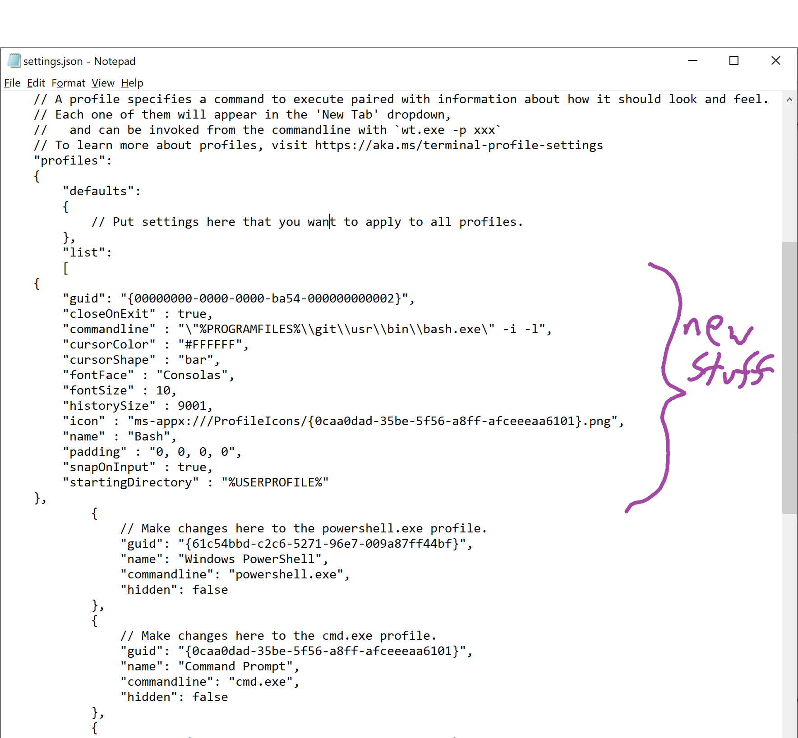
If you get an error like the message below, you did something slightly wrong. If you can’t figure out what you did to break the settings.json file, then you should delete the entire contents of settings.json, press save, close the text editor, then press ctrl-, to reopen settings.json and try all over again from scratch.
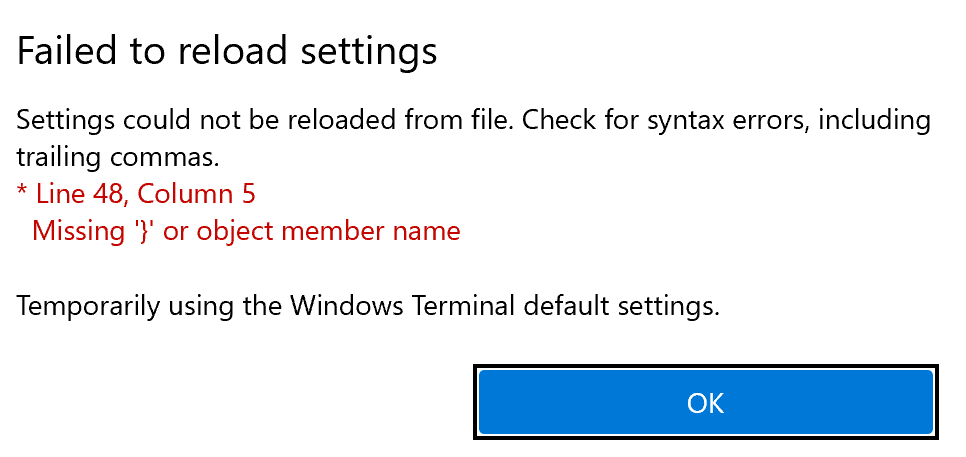
(Thanks to Archimedes Trajano for the nicely written directions on Stack Overflow).
-
If you completed step 2 correctly, when you click on the little downward pointing arrow in the Windows Terminal (which creates a new tab), there should be an option called “Bash”. If you click on “Bash”, you should find yourself in a window that looks a lot like the git bash window. As before, use “javac –version” to verify that everything is working correctly.
If you want to change the default font size (I find size 10 too small, but I’m also almost 40 (WTF)), you can edit it inside settings.json.
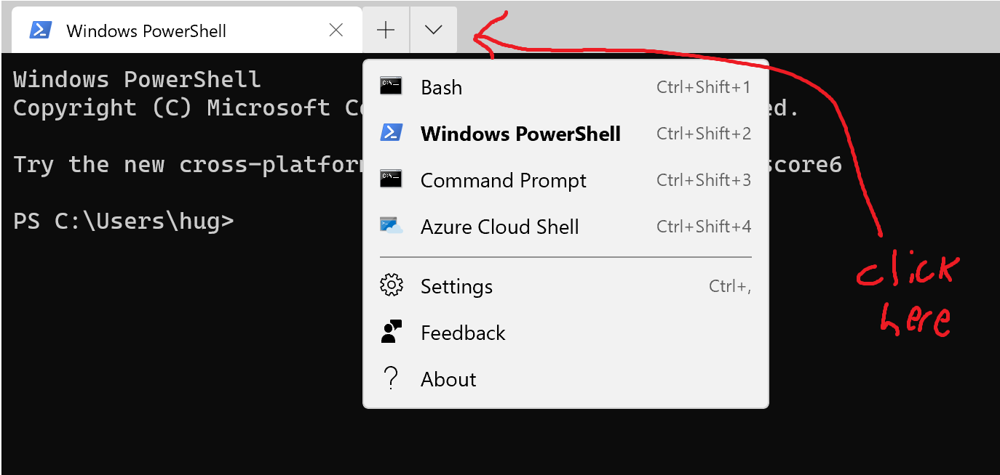
-
If you press the + sign, you’ll see that it opens a PowerShell window by default. To change the behavior of the “+” sign so that it opens a Bash window instead, you can edit the defaultProfile option in settings.json to be equal to “00000000-0000-0000-ba54-000000000002”, as shown below:
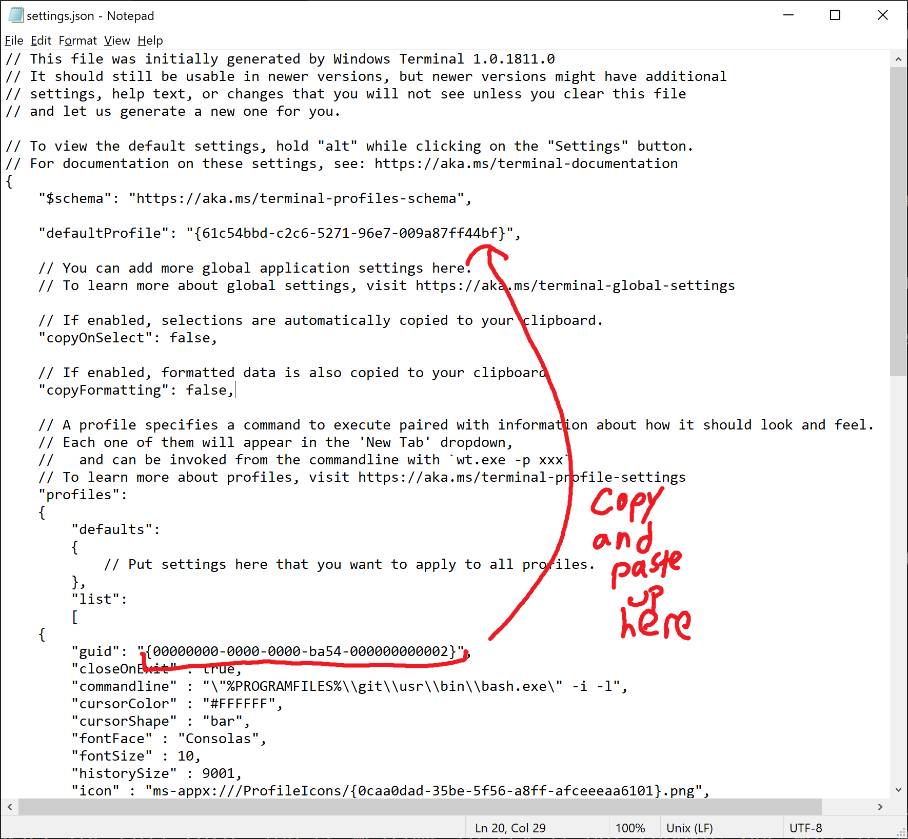
After copying and pasting, settings.json should look like this:
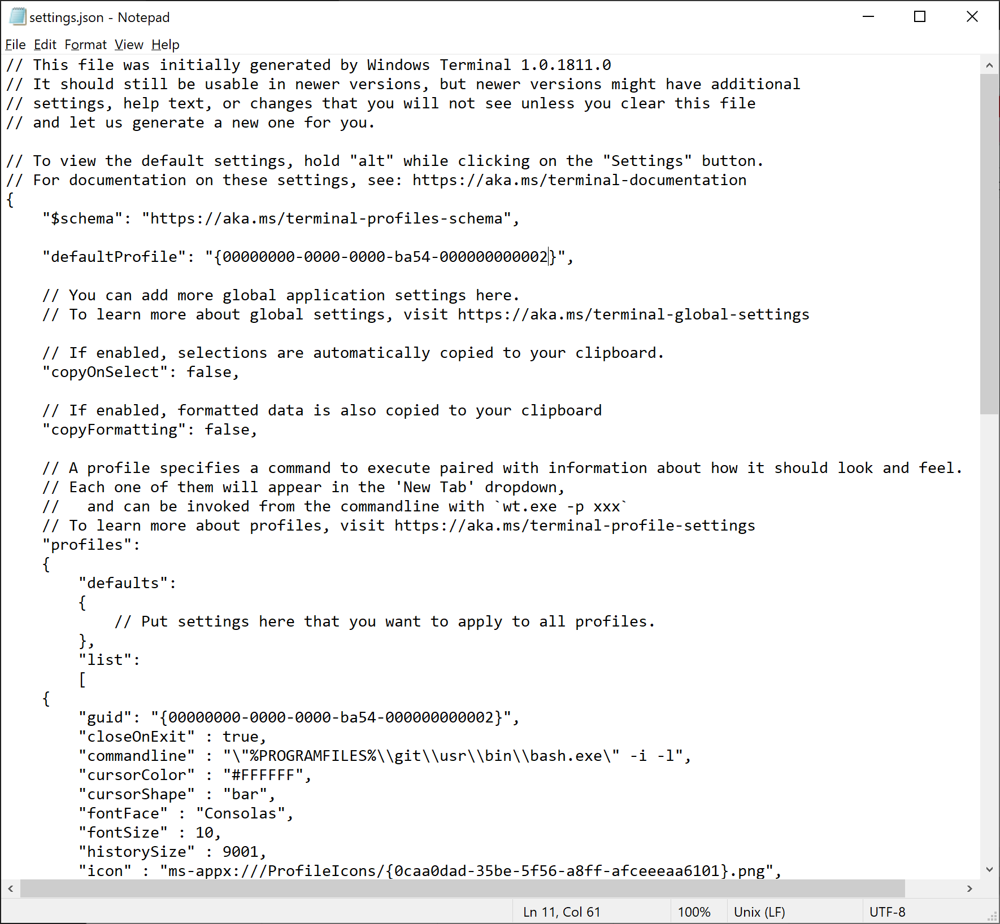
Try clicking the plus sign, and you should see a bash shell window open. At this point, you’re all done! You can now move on with the rest of lab 1.
D. Note on WSL2 (experimental)
The Summer 2020 update of Windows contains a Linux kernel called WSL2. As of the time of this writing, this update is still not available on many Windows computers, so we will not be officially supporting WSL2 for Spring 2021. If you’re pretty computer savvy, you’re welcome to try it out though! One word of warning: You may need to install javac, java, and git inside WSL2 again. I’m not sure though since I haven’t had a chance to try it out myself.